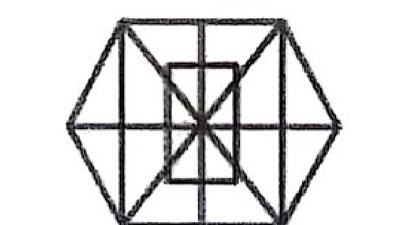

📌 পার্ট ১: প্রামাণ্য রিভিশন নোট ও সূত্রাবলি (Study Notes & Sketchnotes)
⚡ বিদ্যুৎ, জ্বালানি ও জাতীয় গ্রিড সংক্রান্ত গুরুত্বপূর্ণ তথ্য
- দ্বিতীয় শিল্প বিপ্লব (১৮৭০–১৯১৪): উনবিংশ শতাব্দীর শেষার্ধে সূচিত এই বিপ্লবের মূল ভিত্তি ছিল বিদ্যুৎ আবিষ্কার ও প্রযুক্তির ব্যাপক শিল্পায়ন।
- রূপপুর পারমাণবিক বিদ্যুৎ কেন্দ্র: পাবনার ঈশ্বরদীতে রাশিয়ার রোসাটমের সহায়তায় নির্মিত। এর মাধ্যমে বাংলাদেশ বিশ্বে ৩২তম দেশ হিসেবে পারমাণবিক বিদ্যুৎ ক্লাবের সদস্য হয়। মোট ক্ষমতা ২৪০০ মেগাওয়াট (১২০০ মেগাওয়াটের দুটি ইউনিট)।
- গ্যাসভিত্তিক বিদ্যুৎ উৎপাদন: বর্তমানে বাংলাদেশে উৎপাদিত বিদ্যুতের প্রধান জ্বালানি উৎস প্রাকৃতিক গ্যাস (প্রায় ৫২% বিদ্যুৎ গ্যাস থেকে উৎপাদিত হয়)।
- ভারত-বাংলাদেশ বিদ্যুৎ সংযোগ: ভারতের সাথে কুষ্টিয়ার ভেড়ামারা সাবস্টেশনের মাধ্যমে ৫০০ মেগাওয়াট ক্ষমতার ব্যাক-টু-ব্যাক HVDC (High Voltage Direct Current) লাইনে বিদ্যুৎ আমদানি হয়।
- হুইলিং চার্জ (Wheeling Charge): সঞ্চালন লাইনের মাধ্যমে বিদ্যুৎ এক স্থান থেকে অন্য স্থানে পরিবহনের সার্ভিস ফি। এটি জাতীয় গ্রিডের পরিচালক সংস্থা পিজিসিবি (Power Grid Company of Bangladesh - PGCB)-কে প্রদান করা হয়।
- বিদ্যুৎ উৎপাদন ব্যয়: তরল জ্বালানি (ডিজেল ও ফার্নেস অয়েল বা HFO) দিয়ে বিদ্যুৎ উৎপাদন সবচেয়ে ব্যয়বহুল। পক্ষান্তরে নবায়নযোগ্য শক্তির মধ্যে সবচেয়ে বেশি সম্ভাবনা ও ব্যবহার রয়েছে সৌর বিদ্যুতে (Solar Energy)।
- বিদ্যুৎ ট্যারিফ নিয়ন্ত্রণ: বাংলাদেশ এনার্জি রেগুলেটরি কমিশন আইন ২০০৩ অনুযায়ী বিদ্যুৎ ও গ্যাসের ট্যারিফ নির্ধারণ করে সংবিধিবদ্ধ স্বাধীন সংস্থা বিইআরসি (BERC)।
- সর্বোচ্চ সঞ্চালন লাইন: দেশে বর্তমানে সর্বোচ্চ ভোল্টেজের বিদ্যুৎ সঞ্চালন লাইন হলো ৪০০ কেভি (400 kV)।
🔬 পদার্থবিজ্ঞান ও সাধারণ বিজ্ঞান মৌলিক সূত্র
- তাপ সঞ্চালনের ৩ পদ্ধতি:
১. পরিচলন (Convection): তরল ও গ্যাসীয় পদার্থে কণার প্রত্যক্ষ স্থানান্তরের মাধ্যমে ঘটে।
২. পরিবহন (Conduction): কঠিন পদার্থে কণার স্থান পরিবর্তন ছাড়া তাপ সঞ্চালিত হয়।
৩. বিকিরণ (Radiation): কোনো মাধ্যম ছাড়াই তাড়িতচৌম্বক তরঙ্গের মাধ্যমে তাপ সঞ্চালিত হয়। - আপেক্ষিক তাপ (Specific Heat Capacity, s): ১ কেজি ভরের তাপমাত্রা ১ কেলভিন বাড়াতে প্রয়োজনীয় তাপ। একক: J/(kg·K)। পানির আপেক্ষিক তাপ সবচেয়ে বেশি (৪২০০ J/(kg·K))।
- সান্দ্রতা (Viscosity): প্রবাহী পদার্থের (তরল বা গ্যাস) অভ্যন্তরীণ স্তরগুলোর আপেক্ষিক গতিতে বাধা সৃষ্টিকারী ঘর্ষণজনিত ধর্ম।
- আদর্শ ভোল্টেজ ও কারেন্ট উৎস:
উৎসের ধরন অভ্যন্তরীণ রোধ (Internal Resistance) আদর্শ ভোল্টেজ সোর্স (Ideal Voltage Source) শূন্য (Zero) আদর্শ কারেন্ট সোর্স (Ideal Current Source) অসীম (Infinite) - পরম শূন্য তাপমাত্রা (Absolute Zero): ০ K = -২৭৩.১৫° সেলসিয়াস = -৪৫৯.৬৭° ফারেনহাইট। এটি মহাবিশ্বের সর্বনিম্ন সম্ভাব্য তাপমাত্রা যেখানে গ্যাসীয় অণুর গতি স্তব্ধ হয়ে যায়।
- অভিকর্ষজ ত্বরণ ও ওজন: পৃথিবীর কেন্দ্রে অভিকর্ষজ ত্বরণ g = ০, তাই সেখানে বস্তুর ওজনও শূন্য (ওজনহীনতা)।
- শব্দের বেগ ও ঋতু: বায়ুতে আর্দ্রতা বৃদ্ধি পেলে বায়ুর সামগ্রিক ঘনত্ব কমে যায় এবং শব্দের বেগ বৃদ্ধি পায়। বর্ষাকালে বাতাসের আর্দ্রতা সবচেয়ে বেশি থাকায় বর্ষাকালে শব্দ দ্রুততম চলে।
- চৌম্বক পদার্থ: লোহা (Fe), নিকেল (Ni), কোবাল্ট (Co) হলো প্রাকৃতিক ফেরোচৌম্বক পদার্থ।
📐 গাণিতিক শর্টকাট ও সমস্যা সমাধানের কৌশল
মোট দূরত্ব D হলে, (D/2)/21 + (D/2)/24 = 10 বা, D/42 + D/48 = 10 বা, 15D = 3360 বা, D = 224 কিমি।
(6M + 8B) × 10 = (26M + 48B) × 2 বা, 8M = 16B বা, 1M = 2B।
15M + 20B = 50B। মোট কাজ = 200B। সময় লাগবে = 200/50 = 4 দিন।
ক্রয়মূল্য X = (লাভের বিক্রয় + ক্ষতির বিক্রয়) / 2 = (1920 + 1280) / 2 = 1600 টাকা। ২৫% লাভে বিক্রয় = 1600 × 1.25 = 2000 টাকা।
📝 বাংলা ব্যাকরণ ও English Grammar স্পেশাল
- ফারসি শব্দ: খোদা, গুনাহ, দোযখ, নামায, পয়গম্বর, ফেরেশতা, বেহেশত, বান্দা, পেরেশান, রোজা, কারখানা, চশমা, তারিখ, দফতর ইত্যাদি।
- কর্মকারক: 'কী' বা 'কাকে' দিয়ে প্রশ্ন করলে উত্তর পাওয়া যায় (যেমন: ঘোড়া গাড়ি টানে -> কী টানে? গাড়ি = কর্মকারক)।
- শব্দার্থ: কপর্দকহীন = কানাকড়ি বা পয়সাহীন, অর্থাৎ নিঃস্ব বা সর্বস্বান্ত।
- রবীন্দ্রনাথের 'কালান্তর': ভারতবর্ষের রাজনৈতিক সমস্যাবিষয়ক বিখ্যাত প্রবন্ধগ্রন্থ (১৯৩৭)।
- শুদ্ধ বানান: মুমূর্ষু (ম + হ্রস্ব উ, ম + দীর্ঘ ঊ + রেফ, ষ + হ্রস্ব উ)।
- Index-এর Plural: Indices (ল্যাটিন/ব্রিটিশ) অথবা Indexes (আমেরিকান)।
- Phrasal Verbs: Look up (অভিধানে খোঁজা), Look into (তদন্ত করা), Look for (হারানো জিনিস খোঁজা)।
- Adjective চেনার নিয়ম: Noun + -ly = Adjective (যেমন: Friend + ly = Friendly, Home + ly = Homely)।
🌍 আন্তর্জাতিক ও বাংলাদেশ বিষয়াবলি
- বিশ্ব শরণার্থী দিবস: প্রতি বছর ২০ জুন বিশ্বব্যাপী পালিত হয়।
- IRRI: আন্তর্জাতিক ধান গবেষণা ইনস্টিটিউট (International Rice Research Institute) ফিলিপাইনের ম্যানিলায় অবস্থিত (প্রতিষ্ঠা: ১৯৬০)।
- ডোনাল্ড ট্রাম্প: যুক্তরাষ্ট্রের ৪৭তম প্রেসিডেন্ট (পূর্বে ৪৫তম প্রেসিডেন্ট ছিলেন)।
- বাংলাদেশের জাতীয় প্রতীক: ডিজাইনার শিল্পী কামরুল হাসান। শাপলা, দুটি ধানের শীষ, তিনটি পাটপাতা ও চারটি তারকা (সংবিধানের চার মূলনীতি)।
- বাংলাদেশ স্ট্রিট: পশ্চিম আফ্রিকার দেশ আইভরিকোস্টের রাজধানী আবিদজানের কাছে অবস্থিত।
- Starlink: ইলন মাস্কের স্পেসএক্সের (SpaceX) মালিকানাধীন একটি বিশ্বখ্যাত স্যাটেলাইট ইন্টারনেট সার্ভিস প্রদানকারী প্রতিষ্ঠান।
- ড. মুহাম্মদ ইউনূস: ২০০৬ সালে গ্রামীণ ব্যাংকসহ যৌথভাবে শান্তিতে নোবেল পুরস্কার লাভ করেন।
📝 পার্ট ২: বিগত পরীক্ষার প্রামাণ্য প্রশ্নব্যাংক ও কুইজ (Past Exam Questions)
বিশ্ব শরণার্থী দিবস কোনটি?
ব্যাখ্যা: বিশ্ব শরণার্থী দিবস প্রতি বছর ২০ জুন পালিত হয়। এই দিনটি জাতিসংঘ সাধারণ পরিষদ ২০০০ সালে ঘোষণা করে। এই দিবসটি শরণার্থীদের সংগ্রাম এবং তাদের সাহসিকতা ও দৃঢ়তার প্রতি সম্মান জানাতে উদযাপিত হয়।
আন্তর্জাতিক ধান গবেষণা ইনস্টিটিউট অবস্থিত-
ব্যাখ্যা: আন্তর্জাতিক ধান গবেষণা ইনস্টিটিউট (IRRI) এর সদর দপ্তর অবস্থিত ফিলিপাইনের ম্যানিলায়। এটি ১৯৬০ সালে প্রতিষ্ঠিত হয়।
ডোনাল্ড ট্রাম্প আমেরিকার কততম প্রেসিডেন্ট?
ব্যাখ্যা: ডোনাল্ড জন ট্রাম্প একজন মার্কিন রাজনীতিবিদ, ব্যবসায়ী ও গণমাধ্যম ব্যক্তিত্ব। তিনি ২০১৭ সালের ২০ জানুয়ারি যুক্তরাষ্ট্রের ৪৫তম প্রেসিডেন্ট হিসেবে শপথ গ্রহণ করেন এবং ২০২১ সাল পর্যন্ত দায়িত্ব পালন করেন। ২০২৪ সালের নির্বাচনে পুনরায় বিজয়ী হয়ে তিনি ২০২৫ সালের ২০ জানুয়ারি যুক্তরাষ্ট্রের ৪৭তম প্রেসিডেন্ট হিসেবে দ্বিতীয় মেয়াদে শপথ নেন। রিপাবলিকান পার্টির সদস্য ট্রাম্প বর্তমানে যুক্তরাষ্ট্রের প্রেসিডেন্ট হিসেবে দায়িত্ব পালন করছেন।
বিদ্যুৎ আবিষ্কার কততম শিল্প বিপ্লবের সাথে সম্পর্কিত?
ব্যাখ্যা: দ্বিতীয় শিল্প বিপ্লব: পুঁজিবাদের অধীনে প্রযুক্তির বিকাশ প্রথম শিল্প বিপ্লবে থেমে থাকে না। উনবিংশ শতাব্দীর মাঝামাঝি প্রথম বিপ্লবের প্রযুক্তিগত সাফল্যসমূহের প্রয়োগ পূর্ণতা অর্জন করে এবং উনবিংশ শতাব্দীর শেষার্ধে সূচিত হয় দ্বিতীয় শিল্প বিপ্লব (১৮৭০-১৯১৪)। এই বিপ্লবের মূল আবিষ্কার ছিল বিদ্যুৎ।
বাংলাদেশের জাতীয় প্রতীকের ডিজাইনার কে?
ব্যাখ্যা: বাংলাদেশের জাতীয় প্রতীকের কেন্দ্রে রয়েছে পানিতে ভাসমান একটি শাপলা ফুল। ফুলটিকে বেষ্টন করে আছে ধানের দুটি শীষ। চূড়ায় পাটগাছের পরস্পরযুক্ত তিনটি পাতা এবং পাতার উভয়পার্শ্বে দুটি করে মোট চারটি তারকা। চারটি তারকা চিহ্ন দিয়ে বাংলাদেশের সংবিধানের চারটি মূলনীতিকে নির্দেশ করা হয়েছে। রাষ্ট্রীয় প্রতীকের ডিজাইনার: শিল্পী কামরুল হাসান।
বাংলাদেশ স্ট্রিট কোথায় অবস্থিত?
ব্যাখ্যা: [নোট: মূল পরীক্ষার অপশনে সঠিক উত্তর ছিল না, পিএসসি প্রশ্নব্যাংকের ব্যাখ্যা অনুযায়ী সঠিক উত্তর- আইভরিকোস্ট]। পশ্চিম আফ্রিকার দেশ আইভরিকোস্টের রাজধানী আবিদজানের কাছে একটি সড়কের নামকরণ করা হয়েছে 'বাংলাদেশ স্ট্রিট'। জাতিসংঘ শান্তিরক্ষা মিশনে নিয়োজিত বাংলাদেশি শান্তিরক্ষীদের অবদানের স্বীকৃতিস্বরূপ এ সম্মাননা দেওয়া হয়। তবে ২০০২ সালে সিয়েরা লিওনে বাংলাকে অন্যতম সরকারি ভাষার মর্যাদা দেওয়া হয়েছিল।
Starlink একটি-
ব্যাখ্যা: স্টারলিঙ্ক (Starlink) হলো একটি উপগ্রহ-ভিত্তিক ইন্টারনেট নেটওয়ার্ক, যা স্টারলিঙ্ক সার্ভিসেস, এলএলসি দ্বারা পরিচালিত হয়। এই সংস্থাটি একটি আন্তর্জাতিক টেলিযোগাযোগ পরিষেবা প্রদানকারী এবং আমেরিকান মহাকাশ প্রযুক্তি কোম্পানি স্পেসএক্সের (SpaceX) সম্পূর্ণ মালিকানাধীন সহায়ক প্রতিষ্ঠান।
প্রফেসর ড. মুহাম্মদ ইউনুস কত সালে নোবেল পুরস্কার লাভ করেন?
ব্যাখ্যা: অধ্যাপক মুহাম্মদ ইউনূস তার প্রতিষ্ঠিত গ্রামীণ ব্যাংক সহ যৌথভাবে ২০০৬ সালে শান্তিতে নোবেল পুরস্কার লাভ করেন। তিনি প্রথম বাংলাদেশি যিনি নোবেল পুরস্কার অর্জন করেছেন।
খ্রিস্টান ধর্মের ধর্মীয় গুরু পোপ ফ্রান্সিস মারা যান-
ব্যাখ্যা: ক্যাথলিক খ্রিস্টানদের প্রধান ধর্মগুরু পোপ ফ্রান্সিস ২১ এপ্রিল, ২০২৫ সালে ৮৮ বছর বয়সে মারা গেছেন। তিনি ছিলেন দক্ষিণ আমেরিকা (আর্জেন্টিনা) থেকে আসা প্রথম পোপ।
বাংলাদেশে পারমাণবিক বিদ্যুৎ কেন্দ্র কোথায় নির্মিত হচ্ছে?
ব্যাখ্যা: পাবনা জেলার ঈশ্বরদী উপজেলার রূপপুরে বাংলাদেশের প্রথম পারমাণবিক বিদ্যুৎ কেন্দ্র অবস্থিত। এটি রাশিয়ার রোসাটমের সহযোগিতায় নির্মিত। এটি তৈরির মাধ্যমে বাংলাদেশ বিশ্বে ৩২তম দেশ হিসেবে পারমাণবিক বিদ্যুৎ ক্লাবের সদস্য হয়। এখানে মোট ২৪০০ মেগাওয়াট বিদ্যুৎ উৎপন্ন হবে (দুটি ইউনিটে ১২০০ মেগাওয়াট করে)।
বর্তমানে দেশে কত শতাংশ বিদ্যুৎ গ্যাসের মাধ্যমে উৎপাদিত হয়?
ব্যাখ্যা: বর্তমানে দেশে উৎপাদিত বিদ্যুতের প্রধান জ্বালানি উৎস প্রাকৃতিক গ্যাস, যার মাধ্যমে প্রায় ৫২% বিদ্যুৎ উৎপাদিত হয়।
ভারত থেকে আমদানীকৃত বিদ্যুৎ HVDC লাইন দেশের কোন জেলা দিয়ে প্রবেশ করেছে?
ব্যাখ্যা: ভারত থেকে আমদানিকৃত বিদ্যুৎ কুষ্টিয়া জেলার ভেড়ামারা সাবস্টেশনের মাধ্যমে দেশে প্রবেশ করেছে। এখানে ৫০০ মেগাওয়াট ক্ষমতার ব্যাক-টু-ব্যাক এইচভিডিসি (High Voltage Direct Current - HVDC) সাবস্টেশন স্থাপন করা হয়েছে।
বিদ্যুতের হুইলিং চার্জ কোন সংস্থাকে প্রদান করা হয়?
ব্যাখ্যা: হুইলিং চার্জ (Wheeling Charge) হলো সঞ্চালন লাইনের মাধ্যমে বিদ্যুৎ এক স্থান থেকে অন্য স্থানে পরিবহন করার জন্য নির্ধারিত সার্ভিস ফি। এটি Power Grid Company of Bangladesh (PGCB)-কে প্রদান করা হয়, যেহেতু তারাই দেশের একক জাতীয় বিদ্যুৎ সঞ্চালন গ্রিড পরিচালনা ও রক্ষণাবেক্ষণ করে।
কোন জ্বালানিতে বিদ্যুৎ উৎপাদন খরচ সবচেয়ে বেশি?
ব্যাখ্যা: তরল জ্বালানির (যেমন ডিজেল, ফার্নেস অয়েল বা HFO/HSD) বাজারমূল্য অনেক বেশি, আন্তর্জাতিক বাজার থেকে আমদানির ওপর শতভাগ নির্ভরশীল এবং প্ল্যান্টের পরিচালনা খরচও অত্যন্ত চড়া। তাই এতে বিদ্যুৎ উৎপাদন খরচ সবচেয়ে ব্যয়বহুল।
বাংলাদেশে নবায়নযোগ্য জ্বালানির প্রধান উৎস কী?
ব্যাখ্যা: বাংলাদেশে নবায়নযোগ্য শক্তি বা জ্বালানি উৎসের মধ্যে সৌর বিদ্যুৎ (Solar Energy) সবচেয়ে বেশি ব্যবহৃত এবং সর্বাধিক সম্ভাবনাময়। এটি সহজলভ্য, দীর্ঘস্থায়ী ও পরিবেশবান্ধব।
কোন সংস্থা কর্তৃক বিদ্যুতের ট্যারিফ নির্ধারিত হয়?
ব্যাখ্যা: বাংলাদেশ এনার্জি রেগুলেটরি কমিশন (BERC) আইন ২০০৩ অনুযায়ী দেশে বিদ্যুৎ, গ্যাস ও অন্যান্য পেট্রোলিয়াম পণ্যের পাইকারি ও খুচরা ট্যারিফ বা মূল্য নির্ধারণ ও নিয়ন্ত্রণ করে সংবিধিবদ্ধ স্বাধীন সংস্থা 'বিইআরসি' (Bangladesh Energy Regulatory Commission)।
বাংলাদেশে সর্বোচ্চ ভোল্টেজ লেভেল সঞ্চালন লাইন কোনটি?
ব্যাখ্যা: বাংলাদেশে বর্তমানে চালু থাকা জাতীয় গ্রিডের সর্বোচ্চ ভোল্টেজের সঞ্চালন (Transmission) লাইন হলো ৪০০ কেভি (400 kV), যা পায়রা, রামপাল, মাতারবাড়ী ও রূপপুর পাওয়ার প্ল্যান্ট থেকে বিদ্যুৎ সঞ্চালনে ব্যবহৃত হচ্ছে।
তরল পদার্থে তাপ স্থানান্তর প্রক্রিয়ার নাম কী?
ব্যাখ্যা: তরল ও গ্যাসীয় পদার্থে তাপ স্থানান্তরের প্রধান ও স্বাভাবিক পদ্ধতি হলো পরিচলন (Convection), যেখানে উত্তপ্ত কণাগুলো নিজেরাই স্থান পরিবর্তনের মাধ্যমে তাপ এক স্থান থেকে অন্য স্থানে সঞ্চালিত করে। কঠিন পদার্থে পরিবহন (Conduction) এবং শূন্য মাধ্যমে তাড়িতচৌম্বক তরঙ্গের আকারে বিকিরণ (Radiation) ঘটে।
আপেক্ষিক তাপের একক কী?
ব্যাখ্যা: ১ কিলোগ্রাম ভরের কোন পদার্থের তাপমাত্রা ১ কেলভিন বৃদ্ধি করতে যে পরিমাণ তাপ শক্তির প্রয়োজন হয় তাকে ঐ পদার্থের আপেক্ষিক তাপ (Specific Heat Capacity, s) বলে। এর এসআই একক হলো জুল প্রতি কিলোগ্রাম-কেলভিন (J/(kg·K))। পানির আপেক্ষিক তাপ সবচেয়ে বেশি, যার মান ৪২০০ J/(kg·K)।
সান্দ্রতা (Viscosity) কী?
ব্যাখ্যা: প্রবাহী পদার্থের (তরল বা গ্যাস) যে ধর্মের কারণে এর অভ্যন্তরের বিভিন্ন স্তরের আপেক্ষিক গতিতে বা প্রবাহে বাধার সৃষ্টি হয়, তাকে সান্দ্রতা (Viscosity) বলে। এটি মূলত তরলের অভ্যন্তরীণ আণবিক ঘর্ষণজনিত ধর্ম।
কোনটি ফারসি শব্দ?
ব্যাখ্যা: ফারসি ভাষার শব্দসমূহ: খোদা, গুনাহ, দোযখ, নামায, পয়গম্বর, ফেরেশতা, বেহেশত, বান্দা, পেরেশান, রোজা, কারবার, কাগজ, কারখানা, চশমা, জবানবন্দি, তারিখ, দফতর, দোকান, নালিশ, বাদশাহ, বেগম ইত্যাদি। পক্ষান্তরে মুসাফির, তকদির ও মজলুম আরবি শব্দ।
'ঘোড়া গাড়ি টানে।' কোন কারক?
ব্যাখ্যা: বাক্যের ক্রিয়াপদকে 'কী' বা 'কাকে' প্রশ্ন করলে যে উত্তর পাওয়া যায়, তা কর্মকারক। 'ঘোড়া গাড়ি টানে' বাক্যে 'কী টানে?' প্রশ্ন করলে উত্তর পাওয়া যায় 'গাড়ি'। অতএব 'গাড়ি' শব্দটি কর্মকারকে শূন্য বিভক্তি (বা ১মা বিভক্তি)। বাক্যটিতে 'ঘোড়া' হলো কর্তৃকারক।
'কপর্দকহীন' অর্থ-
ব্যাখ্যা: 'কপর্দক' শব্দের আভিধানিক অর্থ কড়ি বা পয়সা। সুতরাং 'কপর্দকহীন' শব্দের অর্থ যার একটি কড়ি বা কানাকড়িও নেই, অর্থাৎ নিঃস্ব, সর্বস্বান্ত বা কপর্দকশূন্য।
'মাথায়' শব্দটির সঠিক সন্ধি-বিচ্ছেদ কোনটি?
ব্যাখ্যা: খাঁটি বাংলা শব্দে এ-কার যুক্ত হলে অনেক সময় সন্ধিজাত বা উচ্চারণগত কারণে তা 'য়'-তে পরিণত হয়। যেমন: মাথা + এ = মাথায়, ঘোড়া + এ = ঘোড়ায় ইত্যাদি।
কোনটি রবীন্দ্রনাথ ঠাকুরের প্রবন্ধগ্রন্থ?
ব্যাখ্যা: 'কালান্তর' হলো রবীন্দ্রনাথ ঠাকুরের ভারতবর্ষীয় রাজনৈতিক সমস্যা, স্বদেশপ্রেম ও সমকালীন বৈশ্বিক প্রেক্ষাপট বিষয়ক বিভিন্ন প্রবন্ধের বিখ্যাত সংকলন (১৯৩৭)। পক্ষান্তরে 'ডাকঘর' নাটক এবং 'বলাকা' ও 'চিত্রা' কাব্যগ্রন্থ।
নিচের কোন বানানটি শুদ্ধ?
ব্যাখ্যা: শুদ্ধ বানান হলো 'মুমূর্ষু' (ম + হ্রস্ব উ, ম + দীর্ঘ ঊ + রেফ, ষ + হ্রস্ব উ)। এর অর্থ যার মৃত্যু আসন্ন বা মরণাপন্ন ব্যক্তি।
What is the plural of the word "index"?
ব্যাখ্যা: ল্যাটিন নিয়মানুযায়ী singular noun-এর শেষে 'x' থাকলে plural করতে 'ices' যোগ হয়ে 'indices' হয় (ব্রিটিশ মান)। আবার আধুনিক আমেরিকান ইংরেজিতে 'indexes'-ও ব্যবহৃত হয়। পরীক্ষায় উভয় রূপই গ্রহণযোগ্য, তবে ক্লাসিক্যাল ব্যাকরণে 'indices' অগ্রাধিকার পায়।
Please look ... the word in the dictionary.
ব্যাখ্যা: অভিধান বা বই থেকে কোনো শব্দ, তথ্য বা ঠিকানা খুঁজে বের করার ক্ষেত্রে উপযুক্ত Appropriate Preposition/Phrasal verb হলো 'Look up'। Look into = তদন্ত করা, Look for = কোনো হারিয়ে যাওয়া বস্তু বা ব্যক্তি খোঁজা।
The correct passive form of 'Someone has stolen his pen'
ব্যাখ্যা: Present perfect tense-এর বাক্যকে passive voice করার নিয়ম: Object (His pen) + has been + V3 (stolen)। Active voice-এ subject হিসেবে someone, anyone, somebody ইত্যাদি অনির্দিষ্ট সর্বনাম থাকলে passive voice-এ সাধারণত 'by someone' উহ্য থাকে।
.... Omar Khayyam is seldom born.
ব্যাখ্যা: Proper noun-এর পূর্বে সাধারণ নিয়মে article বসে না। তবে কোনো বিখ্যাত ব্যক্তির মতো অনন্য প্রতিভা বা সমগুণসম্পন্ন ব্যক্তি বোঝাতে তার নামের পূর্বে indefinite article (a/an) বসে। যেহেতু 'Omar' শব্দটি vowel সাউন্ড দিয়ে শুরু, তাই সঠিক উত্তর হবে 'An Omar Khayyam'।
The word 'Friendly' is
ব্যাখ্যা: Noun-এর সাথে '-ly' প্রত্যয় যুক্ত হয়ে Adjective গঠিত হয়। যেমন: Friend (noun) + ly = Friendly (adjective)। অনুরূপ: Homely, motherly, fatherly, brotherly, lovely ইত্যাদি। কিন্তু Adjective-এর সাথে '-ly' যুক্ত হলে Adverb হয় (যেমন: Quick + ly = Quickly)।
I took an aspirin to .... the pain in my knee.
ব্যাখ্যা: 'Alleviate' শব্দের অর্থ হলো কোনো কষ্ট, যন্ত্রণা বা তীব্রতা লাঘব করা, উপশম করা বা কমিয়ে আনা (to make suffering less severe)। Accelerate = দ্রুততর করা, Deviate = বিপথগামী হওয়া, Accompany = সঙ্গ দেওয়া।
The synonym of 'Mutiny'
ব্যাখ্যা: 'Mutiny' শব্দের অর্থ সশস্ত্র বাহিনী বা জাহাজে কর্তৃপক্ষের বিরুদ্ধে অভ্যুত্থান বা বিদ্রোহ। এর নিখুঁত সমার্থক শব্দ হলো 'Revolt' (বিদ্রোহ, অভ্যুত্থান, rebellion)। Malignity = বিদ্বেষ, Moron = নির্বোধ।
ম্যারাথন যেমন একটি দৌড়, ঠিক তেমনি শীতযাপনতা (hibernation) হলো-
ব্যাখ্যা: ম্যারাথন হলো এক প্রকার দীর্ঘ দূরত্বের দৌড়। একইভাবে হাইবারনেশন (Hibernation বা শীতযাপনতা) হলো প্রতিকূল শীত মৌসুমে প্রাণীদের দীর্ঘকালীন সুপ্তাবস্থা বা গভীর ঘুম।
নিচের কোন শব্দটি অন্যদের সঙ্গে সঙ্গতিপূর্ণ নয়?
ব্যাখ্যা: ত্রিভুজ তিনটি সরলরেখা বা বাহু দ্বারা গঠিত বহুভুজীয় চিত্র। পক্ষান্তরে বৃত্ত, ডিম্বাকার ও গোলক—প্রতিটিই বক্ররেখা সম্বলিত বা গোলাকৃতির চিত্র। তাই ত্রিভুজ অন্যদের চেয়ে সম্পূর্ণ ব্যতিক্রম।
সঙ্গতিপূর্ণ শব্দ দিয়ে শূন্যস্থান পূরণ করুন- কাপ : ঠোঁট :: পাখি : ....?
ব্যাখ্যা: মানুষ কাপ থেকে তরল পান করার সময় ঠোঁট ব্যবহার করে সরাসরি গ্রহণ করে। পাখিও কোনো কিছু খাদ্য বা পানীয় হিসেবে গ্রহণের জন্য তার ঠোঁট (Chanchu/Beak) ব্যবহার করে।
সঙ্গতিপূর্ণ শব্দ দিয়ে শূন্যস্থান পূরণ কর- দ্বিপদ : চতুষ্পদ :: উটপাখি : ..... ?
ব্যাখ্যা: উটপাখি হলো দুই পা বিশিষ্ট (দ্বিপদ) প্রাণী। সাদৃশ্য অনুযায়ী পরবর্তী স্থানে একটি চার পা বিশিষ্ট (চতুষ্পদ) প্রাণী বসবে। প্রদত্ত অপশনগুলোর মধ্যে কেবল বিড়ালই চতুষ্পদ।
নিচের বিকল্পগুলোর মধ্যে থেকে প্রদত্ত শব্দটির সমার্থক শব্দ বেছে নিন: "Autopsy"
ব্যাখ্যা: 'Autopsy' এবং 'Postmortem' উভয় শব্দের অর্থই হলো মৃত্যুর প্রকৃত কারণ উদঘাটনের জন্য মৃতদেহের ময়নাতদন্ত বা অভ্যন্তরীণ শারীরিক পরীক্ষা।
নিচে প্রদত্ত শব্দটির সম্পূর্ণ বিপরীত অর্থ প্রকাশ করে এমন শব্দটি নির্বাচন করুন: "FRAUDULENT"
ব্যাখ্যা: 'Fraudulent' শব্দের অর্থ প্রতারণামূলক, ভুয়া বা কৃত্রিম (deceitful, forged)। এর সরাসরি বিপরীতার্থক শব্দ হলো 'Genuine' (আসল, প্রকৃত, খাঁটি বা সত্য)।
নিচের শব্দজোড়গুলোর মধ্যে কোনটি ভিন্ন ধরনের সম্পর্কযুক্ত?
ব্যাখ্যা: Kind : Cruel (দয়ালু : নিষ্ঠুর), Stale : Fresh (বাসি : টাটকা) এবং Truth : Lie (সত্য : মিথ্যা) জোড়াগুলো পরস্পর বিপরীতার্থক। কিন্তু Slow : Sluggish জোড়ার দুটি শব্দই সমার্থক (উভয়ের অর্থ ধীরগতির)। তাই এটি সম্পর্কগতভাবে ভিন্ন।
রামন বলছে, 'অনুজের মা হলো আমার মায়ের একমাত্র মেয়ে।' তাহলে, রামনের সাথে অনুজ এর সম্পর্ক কি?
ব্যাখ্যা: রামনের মায়ের একমাত্র মেয়ে হলো রামনের বোন। সুতরাং অনুজের মা হলো রামনের বোন। বোনের ছেলে রামনের 'ভাগিনা'। অতএব রামনের সাথে অনুজের সম্পর্ক মামা-ভাগিনা (অনুজ রামনের ভাগিনা)।
এই চিত্রটিতে মোট কতটি ত্রিভুজ আছে?

ব্যাখ্যা: চিত্রটিতে একটি বহুভুজ কাঠামোতে অসংখ্য সরলরেখা ছেদ করেছে। ক্ষুদ্র ত্রিভুজ, দুটি ত্রিভুজ মিলে মাঝারি ত্রিভুজ এবং একাধিক খণ্ড মিলে বৃহৎ ত্রিভুজ গণনা করলে এখানে মোট ২০টির চেয়েও বেশি (মোট ২৮টি) ত্রিভুজ বিদ্যমান। সুতরাং সঠিক উত্তর (খ) ২০ এর অধিক।
নিচের সংখ্যার ধারাটিতে ভুল সংখ্যা খুঁজে বের করুন: ৮, ১৩, ২১, ৩২, ৪৭, ৬৩, ৮০
ব্যাখ্যা: ধারার পদসমূহের পার্থক্য লক্ষ্য করি: ১৩ - ৮ = ৫, ২১ - ১৩ = ৮, ৩২ - ২১ = ১১। এখানে প্রতি ধাপে বৃদ্ধি ৩ করে বাড়ছে (৫, ৮, ১১, ১৪, ১৭, ২০)। সুতরাং ৩২-এর পরবর্তী পদ হওয়া উচিত ৩২ + ১৪ = ৪৬। কিন্তু ধারাটিতে দেওয়া আছে ৪৭। পরবর্তীতে ৪৬ + ১৭ = ৬৩ এবং ৬৩ + ২০ = ৮৩ হয়। তাই ভুল সংখ্যাটি হলো ৪৭।
একজন ব্যক্তি ১০ ঘণ্টায় একটি যাত্রা সম্পন্ন করেন। তিনি যাত্রার প্রথম অর্ধেক ২১ কি.মি./ঘণ্টা গতিতে এবং দ্বিতীয় অর্ধেক ২৪ কিমি/ঘণ্টা গতিতে অতিক্রম করেন। সম্পূর্ণ যাত্রার দৈর্ঘ্য কত কি.মি?
ব্যাখ্যা: ধরি মোট দূরত্ব D কি.মি.। প্রথম অর্ধেক (D/2) অতিক্রমের সময় = (D/2)/21 = D/42 ঘণ্টা। দ্বিতীয় অর্ধেক (D/2) অতিক্রমের সময় = (D/2)/24 = D/48 ঘণ্টা। প্রশ্নমতে, D/42 + D/48 = 10। ল.সা.গু (৪২, ৪৮) = ৩৩৬। বা, (8D + 7D)/336 = 10 বা, 15D = 3360 বা, D = 3360/15 = 224 কি.মি.।
যদি ৬ জন পুরুষ ও ৮ জন ছেলে একটি কাজ ১০ দিনে শেষ করতে পারে, এবং ২৬ জন পুরুষ ও ৪৮ জন ছেলে সেই একই কাজ ২ দিনে শেষ করতে পারে, তবে ১৫ জন পুরুষ ও ২০ জন ছেলে ঐ কাজ কত দিনে শেষ করতে পারবে?
ব্যাখ্যা: ধরি ১ জন পুরুষের কার্যক্ষমতা M এবং ১ জন ছেলের কার্যক্ষমতা B। মোট কাজ = (6M + 8B) × 10 = (26M + 48B) × 2 বা, 60M + 80B = 52M + 96B বা, 8M = 16B বা, M = 2B (১ জন পুরুষ = ২ জন ছেলে)। এখন, ১৫ জন পুরুষ + ২০ জন ছেলে = (15 × 2 + 20) = 50 জন ছেলে। এবং মোট কাজ = (6 × 2 + 8) × 10 = 200 জন ছেলের ১ দিনের কাজ। অতএব সময় লাগবে = 200/50 = 4 দিন।
একটি দ্রব্য ১৯২০ টাকায় বিক্রি করে যে শতাংশ লাভ হয়, তা একই দ্রব্য ১২৮০ টাকায় বিক্রি করলে যে শতাংশ ক্ষতি হয়, সেই শতাংশের সমান। তাহলে ২৫% লাভ করতে হলে দ্রব্যটি কত টাকায় বিক্রি করতে হবে?
ব্যাখ্যা: ধরি ক্রয়মূল্য X টাকা। যেহেতু শতকরা লাভ ও শতকরা ক্ষতি সমান, সেহেতু লাভ = ক্ষতি। বা, 1920 - X = X - 1280 বা, 2X = 3200 বা, X = 1600 টাকা (ক্রয়মূল্য)। এখন ২৫% লাভে বিক্রয়মূল্য = 1600 × 1.25 = 2000 টাকা।
তিন বছর আগে স্বামী, স্ত্রী ও তাদের সন্তানের গড় বয়স ছিল ২৭ বছর এবং পাঁচ বছর আগে স্ত্রী ও সন্তানের গড় বয়স ছিল ২০ বছর। স্বামীর বর্তমান বয়স কত?
ব্যাখ্যা: ৩ বছর আগে স্বামী, স্ত্রী ও সন্তানের মোট বয়স ছিল = ২৭ × ৩ = ৮১ বছর। বর্তমানে ৩ জনের মোট বয়স = ৮১ + (৩ × ৩) = ৯০ বছর। আবার, ৫ বছর আগে স্ত্রী ও সন্তানের মোট বয়স ছিল = ২০ × ২ = ৪০ বছর। বর্তমানে তাদের মোট বয়স = ৪০ + (৫ × ২) = ৫০ বছর। অতএব স্বামীর বর্তমান বয়স = ৯০ - ৫০ = ৪০ বছর।
(১১.৯৮ × ১১.৯৮ + ১১.৯৮x + ০.০২ × ০.০২) এই রাশিটি একটি নিখুঁত বর্গ হবে যদি x এর মান হয়-
ব্যাখ্যা: আমরা জানি (a + b)² = a² + 2ab + b²। এখানে a = 11.98 এবং b = 0.02। নিখুঁত বর্গ হতে মধ্যপদ 11.98x = 2ab = 2 × 11.98 × 0.02 = 11.98 × 0.04 হতে হবে। অতএব x = 0.04। অপশনগুলোর মধ্যে 0.2 × 0.2 = 0.04। সুতরাং সঠিক উত্তর (ঘ)।
একটি দুই অঙ্কের সংখ্যা এবং তার অঙ্কদ্বয়ের অবস্থান পরিবর্তন করে গঠিত সংখ্যার মধ্যে পার্থক্য ৩৬। ওই সংখ্যাটির দুই অঙ্কের মধ্যে পার্থক্য কত?
ব্যাখ্যা: ধরি সংখ্যাটি 10a + b। অঙ্কদ্বয়ের স্থান পরিবর্তন করলে সংখ্যাটি হয় 10b + a। শর্তমতে, (10a + b) - (10b + a) = 36 বা, 9a - 9b = 36 বা, 9(a - b) = 36 বা, a - b = 4। অতএব অঙ্কদ্বয়ের পার্থক্য হলো ৪।
একটি সারিতে ব্যক্তিদের মধ্যে, সাবিকের অবস্থান বাম দিক থেকে ২৬তম এবং ডান দিক থেকে ৩৫তম। তাহলে সারিতে মোট ছাত্রছাত্রীর সংখ্যা হবে:
ব্যাখ্যা: একই ব্যক্তির উভয় প্রান্তের অবস্থান জানা থাকলে মোট ব্যক্তি সংখ্যা = (বাম প্রান্তের অবস্থান + ডান প্রান্তের অবস্থান) - ১ = (২৬ + ৩৫) - ১ = ৬১ - ১ = ৬০ জন।
পাইপ A একটি ট্যাঙ্ক ২০ মিনিটে ভর্তি করতে পারে, পাইপ B ৩০ মিনিটে ভর্তি করতে পারে এবং পাইপ C সেই ট্যাঙ্কটি ৪০ মিনিটে খালি করতে পারে। যদি এই তিনটি পাইপ একসাথে চালু করা হয়, তাহলে ট্যাঙ্কটি ভর্তি হতে কত সময় লাগবে?
ব্যাখ্যা: ১ মিনিটে পাইপ তিনটি একত্রে পূর্ণ করে = ১/২০ + ১/৩০ - ১/৪০ = (৬ + ৪ - ৩)/১২০ = ৭/১২০ অংশ। অতএব সম্পূর্ণ ট্যাঙ্কটি পূর্ণ হতে সময় লাগবে = ১২০/৭ মিনিট = ১৭.১৪ মিনিট।
৪.০৩৬ কে ০.০৪ দিয়ে ভাগ করলে ফলাফল হবে-
ব্যাখ্যা: ৪.০৩৬ ÷ ০.০৪ = (৪০৩৬/১০০০) ÷ (৪/১০০) = (৪০৩৬/১০০০) × (১০০/৪) = ৪০৩৬/৪০ = ১০০.৯।
একটি ধনাত্মক সংখ্যা নির্ণয় কর যা ১৭ যোগ করলে, সংখ্যাটির বিপরীতের ৬০ গুণের সমান হয়।
ব্যাখ্যা: ধরি ধনাত্মক সংখ্যাটি x। প্রশ্নমতে, x + 17 = 60 × (1/x) বা, x² + 17x - 60 = 0 বা, x² + 20x - 3x - 60 = 0 বা, (x - 3)(x + 20) = 0। যেহেতু সংখ্যাটি ধনাত্মক, সেহেতু x = 3।
আদর্শ ভোল্টের উৎসের অভ্যন্তরীণ রোধ কত?
ব্যাখ্যা: একটি আদর্শ ভোল্টেজ উৎসের (Ideal Voltage Source) অভ্যন্তরীণ রোধ হলো শূন্য (Zero), যাতে লোড কারেন্ট যতই পরিবর্তিত হোক না কেন তার টার্মিনালে কোনো অভ্যন্তরীণ ভোল্টেজ পতন ঘটে না। পক্ষান্তরে আদর্শ কারেন্ট সোর্সের অভ্যন্তরীণ রোধ অসীম।
পরম শূন্য তাপমাত্রা কোনটি?
ব্যাখ্যা: তাত্ত্বিকভাবে যে তাপমাত্রায় কোনো গ্যাসের আয়তন শূন্য হয়ে যায় এবং অণুগুলোর তাপীয় গতি সম্পূর্ণরূপে বন্ধ হয়ে যায়, তাকে পরম শূন্য (Absolute Zero) তাপমাত্রা বলে। এর মান হলো ০ কেলভিন বা -২৭৩.১৫° সেলসিয়াস বা -৪৫৯.৬৭° ফারেনহাইট।
নিচের কোনটি output device নয়?
ব্যাখ্যা: Microphone একটি অডিও Input Device যা ব্যবহারকারীর কণ্ঠস্বর বা শব্দ গ্রহণ করে ডিজিটাল সংকেতে কম্পিউটারে পাঠায়। পক্ষান্তরে Monitor, Printer ও Speaker হলো Output Device।
পৃথিবীর কেন্দ্রে অভিকর্ষজ ত্বরণের মান কত?
ব্যাখ্যা: পৃথিবীর কেন্দ্রস্থলে চারপাশে সমানভাবে ভর বণ্টিত থাকায় সেখানে লব্ধি মহাকর্ষ বল শূন্য হয়। তাই পৃথিবীর কেন্দ্রে অভিকর্ষজ ত্বরণ (g) এর মান শূন্য। এজন্য পৃথিবীর কেন্দ্রে যে কোনো বস্তুর ওজনও শূন্য (ওজনহীনতা)।
১ বর্গ ইঞ্চি সমান কত বর্গ সেন্টিমিটার?
ব্যাখ্যা: আমরা জানি, ১ ইঞ্চি = ২.৫৪ সেন্টিমিটার। অতএব ১ বর্গ ইঞ্চি = (২.৫৪ × ২.৫৪) বর্গ সে.মি. = ৬.৪৫১৬ বর্গ সেন্টিমিটার।
বাতাসের আর্দ্রতা মাপার যন্ত্রের নাম কী?
ব্যাখ্যা: বায়ুমণ্ডলে উপস্থিত জলীয় বাষ্পের পরিমাণ বা বাতাসের আর্দ্রতা পরিমাপ করার জন্য হাইগ্রোমিটার (Hygrometer) ব্যবহৃত হয়। তরলের ঘনত্ব বা আপেক্ষিক গুরুত্ব পরিমাপের যন্ত্র হলো হাইড্রোমিটার।
আকাশে রংধনু সৃষ্টির কারণ-
ব্যাখ্যা: বৃষ্টির পর বাতাসে ভাসমান জলকণায় সূর্যের আলো প্রবেশ করলে সেখানে প্রতিফলন, অভ্যন্তরীণ পূর্ণ প্রতিফলন ও আলোর বিচ্ছুরণ (প্রতিসরণ) ঘটে, যার ফলে আকাশে বর্ণিল রংধনু বা রামধনু দৃশ্যমান হয়।
কোনটি মৌলিক পদার্থ?
ব্যাখ্যা: যে পদার্থকে রাসায়নিকভাবে বিশ্লেষণ করলে ওই পদার্থ ছাড়া অন্য কোনো নতুন ধর্মবিশিষ্ট পদার্থ পাওয়া যায় না, তাকে মৌলিক পদার্থ বলে। লোহা (Fe) একটি মৌলিক পদার্থ। পানি (H₂O) যৌগিক পদার্থ এবং ব্রোঞ্জ (তামা ও টিন) ও ইস্পাত (লোহা ও কার্বন) সংকর ধাতু।
কোনটি চৌম্বক পদার্থ?
ব্যাখ্যা: যেসব পদার্থ শক্তিশালীভাবে চুম্বক দ্বারা আকর্ষিত হয় এবং সহজে চুম্বকে পরিণত হয়, তাদের ফেরোচৌম্বক পদার্থ বলে। লোহা, নিকেল ও কোবাল্ট হলো সবচেয়ে পরিচিত চৌম্বক পদার্থ। বিস্মাথ ও অ্যান্টিমনি চুম্বক দ্বারা বিকর্ষিত হয় (ডায়াচৌম্বক)।
কোন ঋতুতে শব্দ বায়ু মাধ্যমে দ্রুততম চলে?
ব্যাখ্যা: বায়ুর আর্দ্রতা বৃদ্ধি পেলে বায়ুর সামগ্রিক ঘনত্ব কমে যায়, ফলে শব্দের বেগ বৃদ্ধি পায় ($v \propto 1/\sqrt{ ho}$)। বর্ষাকালে বায়ুতে জলীয় বাষ্প বা আর্দ্রতা সবচেয়ে বেশি থাকে, তাই বর্ষাকালে শব্দ বায়ুর মাধ্যমে সবচেয়ে দ্রুত গতিতে সঞ্চালিত হয়।